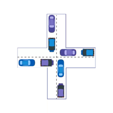
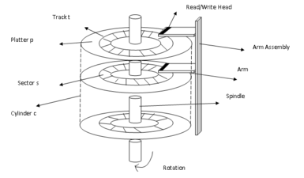
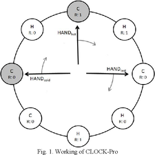

ALGORITHMS
ROUND ROBIN ALGORITHM
Round-robin is an algorithm employed by process and network schedulers in computing. As the term is generally
used,
time slices are assigned to each process in equal portions and in circular order, handling all processes
without priority.
Explore
Video
Demo

BANKER'S ALGORITHM FOR DEADLOCK ALGORITHM
It is a banker algorithm, which is used to avoid deadlock and allocate resources safely to each process in
the computer system.
As the name suggests, it is used mainly in banking system, to determine if a loan can be sanctioned to a
person or not.
Explore
Video
Demo

SCAN/C-SCAN DISK SCHEDULING ALGORITHM
A Process makes the I/O requests to the operating system to access the disk. Disk Scheduling Algorithm
manages those requests and decides the order of the disk access given to the requests.
Explore
Video
Demo

MRU PAGE REPLACEMENT ALGORITHM
Page replacement algorithms decide which memory pages to page out, sometimes called swap out, or write to
disk, when a page of memory needs to be allocated. MRU is considered an optimal page replacement algo
Explore
Video
Demo